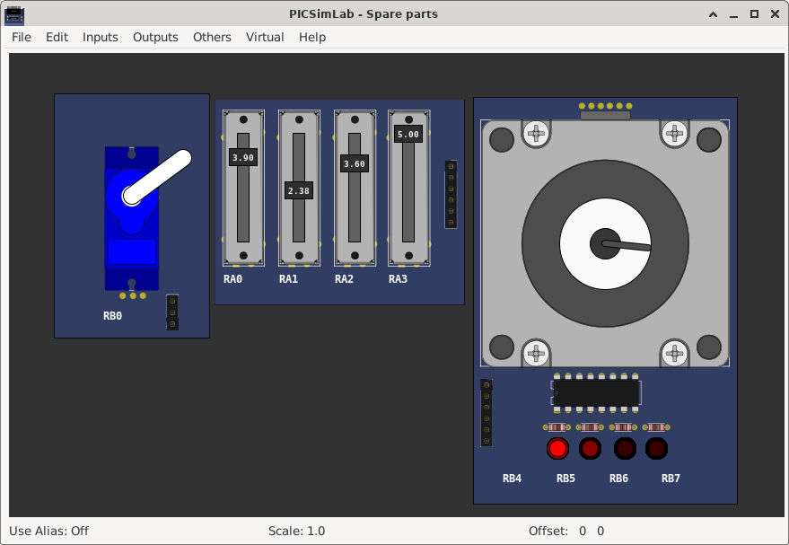
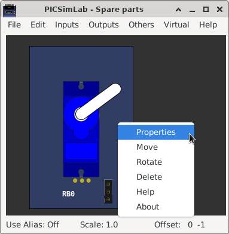

Chapter 9
Spare Parts
The PICSimLab has a window that allows the connection of spare parts to the microcontroller, it can be accessed through the menu “ Modules-> Spare parts ”.
The main window has the menu with the following functions:
- File
- New configuration - Clear the spare parts window
- Save configuration - Saves the current settings of the spare parts into .pcf file
- Load configuration - Loads the settings from .pcf file
- Save pin alias - Saves the current pin alias to .ppa text file
- Load pin alias - Loads the pin alias from .ppa file
- Edit
- Clear pin alias - Clear the pin alias
- Toggle pin alias - Enable/Disable pin alias use
- Edit pin alias - Open current pin alias .ppa file in text editor
- Reload pin alias - Reload the current .ppa pin alias file (need after edit .ppa file)
- Zoom in - Increase draw scale
- Zoom out - Decrease draw scale
- Inputs
- Encoder - Adds a rotary quadrature encoder with push button
- Gamepad - Adds a gamepad
- Gamepad (Analogic) - Adds a gamepad with one analogic output
- Keypad - Adds one matrix keypad
- MPU6050 - Adds a accelerometer and gyroscope (only raw values)
- Potentiometers - Adds 4 potentiometers
- Potentiometers (Rotary) - Adds 4 rotary potentiometers
- Push Buttons - Adds 8 push buttons
- Push Buttons (Analogic) - Adds 8 push buttons with analog output
- Switchs - Adds eight switchs
- Ultrasonic HC-SR04 - Adds a ultrasonic range sensor
- Outputs
- 7 Segments Display - Adds four multiplexed 7 segments displays
- 7 Segments Display (w/dec) - Adds four multiplexed 7 segments displays with decoder
- Buzzer - Adds a active/passive buzzer
- DC Motor - Adds a DC motor with H-bridge and quadrature encoder
- LCD hd44780 - Adds a text display hd44780
- LCD ili9340 - Adds a color graphic display ili9340 with touchscreen
- LCD pcd8544 - Adds a monochrome graphic display pcd8544 (Nokia 5110)
- LCD pcf8833 - Adds a color graphic display pcf8833
- LCD ssd1306 - Adds a monochrome graphic display ssd1306
- LED Matrix - Adds a 8x8 LED matrix with MAX72xx controller
- LEDs - Adds 8 red LEDs
- RGB LED - Adds one RGB LED
- Servo Motor - Adds a servo motor
- Step Motor - Adds a step motor
- Others
- ETH w5500 - Adds a ethernet shield w5500
- IO 74xx595 - Adds a 74xx595 SIPO 8 bit shift register
- IO MCP23S17 - Adds a MCP23S17 serial SPI IO expander
- IO PCF8574 - Adds a PCF8574 serial I2C IO expander
- IO UART - Adds a UART serial port
- Jumper Wires - Adds sixteen jumper wires
- MEM 24CXXX - Adds a 24CXXX serial I2C EEPROM memory
- RTC ds1307 - Adds a ds1307 real time clock
- RTC pfc8563 - Adds a pfc8563 real time clock
- SD Card - Adds a SD card shield
- Temperature System - Adds a temperature control system
- Virtual
- D. Transfer Function - Adds a discrete transfer function mathematical model
- IO Virtual term - Adds a virtual serial terminal
- Signal Generator - Adds a virtual signal generator
- VCD Dump - Adds a digital value file dump recorder
- VCD Dump (Analogic) - Adds a analog value file dump recorder
- VCD Play - Adds a digital value file dump player
- Help
- Contents - Open Help window
- About - Show message about author and version

After adding the part, with a right click of the mouse you can access the options menu of the part with the options:
- Properties - Opens the connection settings window
- Move - Unlocks the part to move
- Rotate - Change the orientation of part
- Delete - Remove part
- Help - Open Help window of part
- About - Show message about author and version of part

9.1 Inputs
9.1.1 Encoder
9.1.2 Gamepad
9.1.3 Gamepad Analogic
9.1.4 Keypad
9.1.5 MPU6050
9.1.6 Potentiometers
9.1.7 Potentiometers (Rotary)
9.1.8 Push Buttons
9.1.9 Push Buttons (Analogic)
9.1.10 Switchs
9.1.11 Ultrasonic HC-SR04
9.2 Outputs
9.2.1 7 Segments Display
9.2.2 7 Segments Display (w/dec)
9.2.3 Buzzer
9.2.4 DC Motor
9.2.5 LCD hd44780
9.2.6 LCD ili9341
9.2.7 LCD pcf8833
9.2.8 LCD pcd8544
9.2.9 LCD ssd1306
9.2.10 LED Matrix
9.2.11 LEDs
9.2.12 RGB LED
9.2.13 Servo Motor
9.2.14 Step Motor
9.3 Others
9.3.1 ETH w5500
9.3.2 IO 74xx595
9.3.3 IO MCP23S17
9.3.4 IO PCF8574
9.3.5 IO UART
9.3.6 Jumper Wires
9.3.7 MEM 24CXXX
9.3.8 RTC ds1307
9.3.9 RTC pfc8563
9.3.10 SD Card
9.3.11 Temperature System
9.4 Virtual
9.4.1 D. Transfer Function
9.4.2 IO Virtual term
9.4.3 Signal Generator
9.4.4 VCD dump
9.4.5 VCD dump (Analogic)
9.4.6 VCD Play
9.1.1 Encoder
9.1.2 Gamepad
9.1.3 Gamepad Analogic
9.1.4 Keypad
9.1.5 MPU6050
9.1.6 Potentiometers
9.1.7 Potentiometers (Rotary)
9.1.8 Push Buttons
9.1.9 Push Buttons (Analogic)
9.1.10 Switchs
9.1.11 Ultrasonic HC-SR04
9.2 Outputs
9.2.1 7 Segments Display
9.2.2 7 Segments Display (w/dec)
9.2.3 Buzzer
9.2.4 DC Motor
9.2.5 LCD hd44780
9.2.6 LCD ili9341
9.2.7 LCD pcf8833
9.2.8 LCD pcd8544
9.2.9 LCD ssd1306
9.2.10 LED Matrix
9.2.11 LEDs
9.2.12 RGB LED
9.2.13 Servo Motor
9.2.14 Step Motor
9.3 Others
9.3.1 ETH w5500
9.3.2 IO 74xx595
9.3.3 IO MCP23S17
9.3.4 IO PCF8574
9.3.5 IO UART
9.3.6 Jumper Wires
9.3.7 MEM 24CXXX
9.3.8 RTC ds1307
9.3.9 RTC pfc8563
9.3.10 SD Card
9.3.11 Temperature System
9.4 Virtual
9.4.1 D. Transfer Function
9.4.2 IO Virtual term
9.4.3 Signal Generator
9.4.4 VCD dump
9.4.5 VCD dump (Analogic)
9.4.6 VCD Play